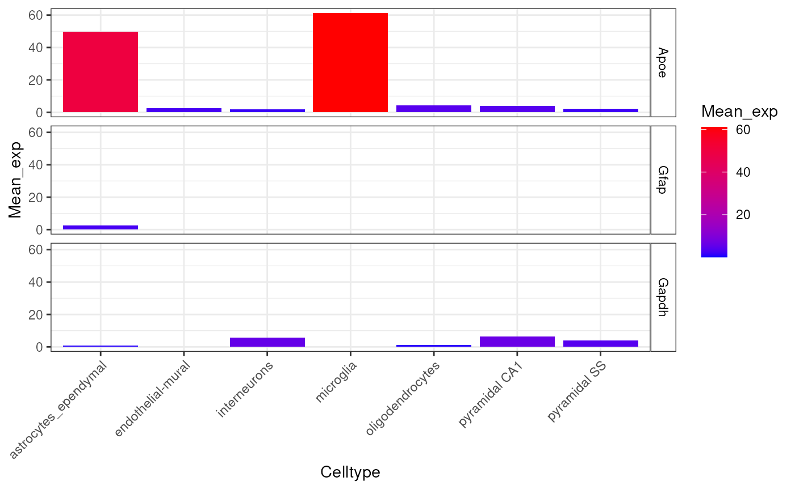

Extended examples
Authors: Alan Murphy, Brian Schilder, and Nathan Skene
Updated: Dec-23-2021
Source: vignettes/extended.Rmd
extended.RmdRun cell-type enrichment tests
Introduction
In the following vignette, we provide more a more in-depth version of the examples provided in the Getting started vignette.
Prepare input data
CellTypeDataset
For this example we use a subset of the genes from the merged dataset generated in the Create a CellTypeDataset section below, which is accessed using ewceData::ctd().
CTD levels
Each level of a CTD corresponds to increasingly refined cell-type/-subtype annotations. For example, in the CTD ewceData::ctd() level 1 includes the cell-type “interneurons”, while level 2 breaks these this group into 16 different interneuron subtypes (“Int…”).
## Load merged cortex and hypothalamus dataset generated by Karolinska institute
ctd <- ewceData::ctd() # i.e. ctd_MergedKI## snapshotDate(): 2021-11-24## see ?ewceData and browseVignettes('ewceData') for documentation## loading from cache
Gene lists
For the first demonstration of EWCE we will test for whether genes that are genetically associated with Alzheimer’s disease are enriched in any particular cell type.
This example gene list is stored within the ewceData package:
hits <- ewceData::example_genelist()## see ?ewceData and browseVignettes('ewceData') for documentation## loading from cache
print(hits)## [1] "APOE" "BIN1" "CLU" "ABCA7" "CR1" "PICALM"
## [7] "MS4A6A" "CD33" "MS4A4E" "CD2AP" "EOGA1" "INPP5D"
## [13] "MEF2C" "HLA-DRB5" "ZCWPW1" "NME8" "PTK2B" "CELF1"
## [19] "SORL1" "FERMT2" "SLC24A4" "CASS4"Gene formats and species
All gene IDs are assumed by the package to be provided in gene symbol format (rather than Ensembl/Entrez). Symbols can be provided as any species-specific gene symbols supported by the package orthogene, though the genelistSpecies argument will need to be set appropriately.
Likewise, the single-cell dataset can be from any species, but the sctSpecies argument must be set accordingly.
The example gene list here stores the human genes associated with human disease, and hence are HGNC symbols.
The next step is to determine the most suitable background set. This can be user-supplied, but by default the background is all 1:1 ortholog genes shared by genelistSpecies and sctSpecies that are also present in sct_data.
Notes on orthogene
orthogene substantially improves upon previous ortholog translations that used the static ewceData::mouse_to_human_homologs() file as the former is updated using the Homologene database periodically.
exp <- ctd[[1]]$mean_exp
#### Old conversion method ####
m2h <- ewceData::mouse_to_human_homologs()## see ?ewceData and browseVignettes('ewceData') for documentation## loading from cache
exp_old <- exp[rownames(exp) %in% m2h$MGI.symbol,]
#### New conversion method (used by EWCE internally) ####
exp_new <- orthogene::convert_orthologs(gene_df = exp,
input_species = "mouse",
output_species = "human",
method = "homologene")## Preparing gene_df.## Dense matrix format detected.## Extracting genes from rownames.## 15,259 genes extracted.## Converting mouse ==> human orthologs using: homologene## Retrieving all organisms available in gprofiler.## Using stored `gprofiler_orgs`.## Mapping species name: mouse## Common name mapping found for mouse## 1 organism identified from search: 10090## Retrieving all organisms available in gprofiler.## Using stored `gprofiler_orgs`.## Mapping species name: human## Common name mapping found for human## 1 organism identified from search: 9606## Checking for genes without orthologs in human.## Extracting genes from input_gene.## 13,416 genes extracted.## Extracting genes from ortholog_gene.## 13,416 genes extracted.## Checking for genes without 1:1 orthologs.## Dropping 46 genes that have multiple input_gene per ortholog_gene.## Dropping 56 genes that have multiple ortholog_gene per input_gene.## Filtering gene_df with gene_map## Setting ortholog_gene to rownames.##
## =========== REPORT SUMMARY ===========## Total genes dropped after convert_orthologs :
## 2,016 / 15,259 (13%)## Total genes remaining after convert_orthologs :
## 13,243 / 15,259 (87%)
#### Report ####
message("The new method retains ",
formatC(nrow(exp_new) - nrow(exp_old), big.mark = ","),
" more genes than the old method.")## The new method retains 918 more genes than the old method.orthogene is also used internally to standardise gene lists supplied to EWCE functions, such as EWCE::bootstrap_enrichment_test(hits = <gene_list>).
Not only can it map these gene lists across species, but it can also map them within species. For example, if you provide a list of Ensembl IDs, it will automatically convert them to standardised HGNC gene symbols so they’re compatible with the similarly standardised CellTypeDataset.
Setting analysis parameters
We now need to set the parameters for the analysis. For a publishable analysis we would want to generate over 10,000 random lists and determine their expression levels, but for computational speed let us only use reps=100. We want to analyse level 1 annotations so set level to 1.
# Use 100 bootstrap lists for speed, for publishable analysis use >=10000
reps <- 100
# Use level 1 annotations (i.e. Interneurons)
annotLevel <- 1 Enrichment tests
Default tests
We have now loaded the SCT data, prepared the gene lists and set the parameters. We run the model as follows.
Note: We set the seed at the top of this vignette to ensure reproducibility in the bootstrap sampling function.
Parallelisation
You can now speed up the bootstrapping process by parallelising across multiple cores with the parameter no_cores (=1 by default).
# Bootstrap significance test, no control for transcript length and GC content
full_results <- EWCE::bootstrap_enrichment_test(sct_data = ctd,
sctSpecies = "mouse",
genelistSpecies = "human",
hits = hits,
reps = reps,
annotLevel = annotLevel)## 1 core(s) assigned as workers (1reserved).## Generating gene background for mouse x human ==> human## Retrieving all organisms available in gprofiler.## Using stored `gprofiler_orgs`.## Mapping species name: mouse## Common name mapping found for mouse## 1 organism identified from search: mmusculus## Retrieving all organisms available in gprofiler.## Using stored `gprofiler_orgs`.## Mapping species name: human## Common name mapping found for human## 1 organism identified from search: hsapiens## Retrieving all genes using: homologene.## Retrieving all organisms available in gprofiler.## Using stored `gprofiler_orgs`.## Mapping species name: mmusculus## 1 organism identified from search: 10090## Gene table with 21,207 rows retrieved.## Returning all 21,207 genes from mmusculus.## Retrieving all genes using: homologene.## Retrieving all organisms available in gprofiler.## Using stored `gprofiler_orgs`.## Mapping species name: hsapiens## 1 organism identified from search: 9606## Gene table with 19,129 rows retrieved.## Returning all 19,129 genes from hsapiens.## Preparing gene_df.## data.frame format detected.## Extracting genes from Gene.Symbol.## 21,207 genes extracted.## Converting mmusculus ==> hsapiens orthologs using: homologene## Retrieving all organisms available in gprofiler.## Using stored `gprofiler_orgs`.## Mapping species name: mmusculus## 1 organism identified from search: 10090## Retrieving all organisms available in gprofiler.## Using stored `gprofiler_orgs`.## Mapping species name: hsapiens## 1 organism identified from search: 9606## Checking for genes without orthologs in hsapiens.## Extracting genes from input_gene.## 17,355 genes extracted.## Extracting genes from ortholog_gene.## 17,355 genes extracted.## Checking for genes without 1:1 orthologs.## Dropping 131 genes that have multiple input_gene per ortholog_gene.## Dropping 498 genes that have multiple ortholog_gene per input_gene.## Filtering gene_df with gene_map## Adding input_gene col to gene_df.## Adding ortholog_gene col to gene_df.##
## =========== REPORT SUMMARY ===========## Total genes dropped after convert_orthologs :
## 4,725 / 21,207 (22%)## Total genes remaining after convert_orthologs :
## 16,482 / 21,207 (78%)##
## =========== REPORT SUMMARY ===========## 16,482 / 21,207 (77.72%) target_species genes remain after ortholog conversion.## 16,482 / 19,129 (86.16%) reference_species genes remain after ortholog conversion.## Retrieving all organisms available in gprofiler.## Using stored `gprofiler_orgs`.## Mapping species name: human## Common name mapping found for human## 1 organism identified from search: hsapiens## Retrieving all organisms available in gprofiler.## Using stored `gprofiler_orgs`.## Mapping species name: human## Common name mapping found for human## 1 organism identified from search: hsapiens## Retrieving all genes using: homologene.## Retrieving all organisms available in gprofiler.## Using stored `gprofiler_orgs`.## Mapping species name: hsapiens## 1 organism identified from search: 9606## Gene table with 19,129 rows retrieved.## Returning all 19,129 genes from hsapiens.##
## =========== REPORT SUMMARY ===========## 19,129 / 19,129 (100%) target_species genes remain after ortholog conversion.## 19,129 / 19,129 (100%) reference_species genes remain after ortholog conversion.## 16,482 intersect background genes used.## Standardising CellTypeDataset## Converting to sparse matrix.
## Converting to sparse matrix.## Checking gene list inputs.## Retrieving all genes using: homologene.## Retrieving all organisms available in gprofiler.## Using stored `gprofiler_orgs`.## Mapping species name: human## Common name mapping found for human## 1 organism identified from search: 9606## Gene table with 19,129 rows retrieved.## Returning all 19,129 genes from human.## Standardising sct_data.## Converting gene list input to standardised human genes.## Running without gene size control.## 17 hit genes remain after filtering.## Computing summed proportions.## Testing for enrichment in 7 cell types...## Sorting results by p-value.## Computing BH-corrected q-values.## 1 significant cell type enrichment results @ q<0.05 :## CellType annotLevel p fold_change sd_from_mean q
## 1 microglia 1 0 2.003754 3.822969 0A note on both the background and target gene lists, other common gene list objects can be used as inputs such as BiocSet::BiocSet and GSEABase::GeneSet. Below is an example of how to format each for the target gene list (hits):
if(!"BiocSet" %in% rownames(installed.packages())) {
BiocManager::install("BiocSet")
}
if(!"GSEABase" %in% rownames(installed.packages())) {
BiocManager::install("GSEABase")
}
library(BiocSet)
library(GSEABase)
# Save both approaches as hits which will be passed to bootstrap_enrichment_test
genes <- c("Apoe","Inpp5d","Cd2ap","Nme8",
"Cass4","Mef2c","Zcwpw1","Bin1",
"Clu","Celf1","Abca7","Slc24a4",
"Ptk2b","Picalm","Fermt2","Sorl1")
#BiocSet::BiocSet, BiocSet_target contains the gene list target
BiocSet_target <- BiocSet::BiocSet(set1 = genes)
hits <- unlist(BiocSet::es_element(BiocSet_target))
#GSEABase::GeneSet, GeneSet_target contains the gene list target
GeneSet_target <- GSEABase::GeneSet(genes)
hits <- GSEABase::geneIds(GeneSet_target) The main table of results is stored in full_results$results. We can see the most significant results using:
knitr::kable(full_results$results)| CellType | annotLevel | p | fold_change | sd_from_mean | q | |
|---|---|---|---|---|---|---|
| microglia | microglia | 1 | 0.00 | 2.0037539 | 3.8229690 | 0.000 |
| astrocytes_ependymal | astrocytes_ependymal | 1 | 0.11 | 1.3594176 | 1.4291523 | 0.385 |
| oligodendrocytes | oligodendrocytes | 1 | 0.78 | 0.7903958 | -0.8909301 | 1.000 |
| endothelial_mural | endothelial_mural | 1 | 0.83 | 0.7587306 | -0.9521828 | 1.000 |
| pyramidal_SS | pyramidal_SS | 1 | 0.84 | 0.8338200 | -0.9271986 | 1.000 |
| pyramidal_CA1 | pyramidal_CA1 | 1 | 0.90 | 0.7882024 | -1.1989117 | 1.000 |
| interneurons | interneurons | 1 | 1.00 | 0.3868205 | -3.1123590 | 1.000 |
Plot results
The results can be visualised using another function, which shows for each cell type, the number of standard deviations from the mean the level of expression was found to be in the target gene list, relative to the bootstrapped mean:
plot_list <- EWCE::ewce_plot(total_res = full_results$results,
mtc_method ="BH",
ctd = ctd) # optional (unless you want dendrogram)## Loading required namespace: cowplot## Loading required namespace: gridExtra## Scale for 'x' is already present. Adding another scale for 'x', which will
## replace the existing scale.
# print(plot_list$plain)For publications it can be useful to plot a dendrogram alongside the plot. This can be done by including the cell type data as an additional argument. The dendrogram should automatically align with the graph ticks (thanks to Robert Gordon-Smith, Mres Molecular and Cellular Biosciences, Imperial College London for this solution):
print(plot_list$withDendro)
If you want to view the characteristics of enrichment for each gene within the list then the generate_bootstrap_plots function should be used. This saves the plots into the BootstrapPlots folder. This takes the results of a bootstrapping analysis so as to only generate plots for significant enrichments. The listFileName argument is used to give the generated graphs a particular file name. The savePath argument is used here to save the files to a temporary directory, this can be updated to your preferred location. The file path where it was saved is returned so the temporary directory can be located if used.
bt_plot_location <- EWCE::generate_bootstrap_plots(
sct_data = ctd,
hits = hits,
sctSpecies = "mouse",
genelistSpecies = "human",
reps = reps,
annotLevel = annotLevel,
full_results = full_results)Control for transcript length and GC-content
When analysing genes found through genetic association studies it is important to consider biases which might be introduced as a result of transcript length and GC-content. The package can control for these by selecting the bootstrap lists such that the ith gene in the random list has properties similar to theith gene in the target list. To enable the algorithm to do this it needs to be passed the gene lists as HGNC symbols rather than MGI.
The bootstrapping function then takes different arguments:
# Bootstrap significance test controlling for transcript length and GC content
cont_results <- EWCE::bootstrap_enrichment_test(
sct_data = ctd,
hits = hits,
sctSpecies = "mouse",
genelistSpecies = "human",
reps = reps,
annotLevel = annotLevel,
geneSizeControl = TRUE)## 1 core(s) assigned as workers (1reserved).## Generating gene background for mouse x human ==> human## Retrieving all organisms available in gprofiler.## Using stored `gprofiler_orgs`.## Mapping species name: mouse## Common name mapping found for mouse## 1 organism identified from search: mmusculus## Retrieving all organisms available in gprofiler.## Using stored `gprofiler_orgs`.## Mapping species name: human## Common name mapping found for human## 1 organism identified from search: hsapiens## Retrieving all genes using: homologene.## Retrieving all organisms available in gprofiler.## Using stored `gprofiler_orgs`.## Mapping species name: mmusculus## 1 organism identified from search: 10090## Gene table with 21,207 rows retrieved.## Returning all 21,207 genes from mmusculus.## Retrieving all genes using: homologene.## Retrieving all organisms available in gprofiler.## Using stored `gprofiler_orgs`.## Mapping species name: hsapiens## 1 organism identified from search: 9606## Gene table with 19,129 rows retrieved.## Returning all 19,129 genes from hsapiens.## Preparing gene_df.## data.frame format detected.## Extracting genes from Gene.Symbol.## 21,207 genes extracted.## Converting mmusculus ==> hsapiens orthologs using: homologene## Retrieving all organisms available in gprofiler.## Using stored `gprofiler_orgs`.## Mapping species name: mmusculus## 1 organism identified from search: 10090## Retrieving all organisms available in gprofiler.## Using stored `gprofiler_orgs`.## Mapping species name: hsapiens## 1 organism identified from search: 9606## Checking for genes without orthologs in hsapiens.## Extracting genes from input_gene.## 17,355 genes extracted.## Extracting genes from ortholog_gene.## 17,355 genes extracted.## Checking for genes without 1:1 orthologs.## Dropping 131 genes that have multiple input_gene per ortholog_gene.## Dropping 498 genes that have multiple ortholog_gene per input_gene.## Filtering gene_df with gene_map## Adding input_gene col to gene_df.## Adding ortholog_gene col to gene_df.##
## =========== REPORT SUMMARY ===========## Total genes dropped after convert_orthologs :
## 4,725 / 21,207 (22%)## Total genes remaining after convert_orthologs :
## 16,482 / 21,207 (78%)##
## =========== REPORT SUMMARY ===========## 16,482 / 21,207 (77.72%) target_species genes remain after ortholog conversion.## 16,482 / 19,129 (86.16%) reference_species genes remain after ortholog conversion.## Retrieving all organisms available in gprofiler.## Using stored `gprofiler_orgs`.## Mapping species name: human## Common name mapping found for human## 1 organism identified from search: hsapiens## Retrieving all organisms available in gprofiler.## Using stored `gprofiler_orgs`.## Mapping species name: human## Common name mapping found for human## 1 organism identified from search: hsapiens## Retrieving all genes using: homologene.## Retrieving all organisms available in gprofiler.## Using stored `gprofiler_orgs`.## Mapping species name: hsapiens## 1 organism identified from search: 9606## Gene table with 19,129 rows retrieved.## Returning all 19,129 genes from hsapiens.##
## =========== REPORT SUMMARY ===========## 19,129 / 19,129 (100%) target_species genes remain after ortholog conversion.## 19,129 / 19,129 (100%) reference_species genes remain after ortholog conversion.## 16,482 intersect background genes used.## Standardising CellTypeDataset## Converting to sparse matrix.
## Converting to sparse matrix.## Checking gene list inputs.## Retrieving all genes using: homologene.## Retrieving all organisms available in gprofiler.## Using stored `gprofiler_orgs`.## Mapping species name: human## Common name mapping found for human## 1 organism identified from search: 9606## Gene table with 19,129 rows retrieved.## Returning all 19,129 genes from human.## Standardising sct_data.## Converting gene list input to standardised human genes.## Running with gene size control.## Warning: genelistSpecies not provided. Setting to 'human' by default.## Retrieving all genes using: gprofiler## Retrieving all organisms available in gprofiler.## Using stored `gprofiler_orgs`.## Mapping species name: human## Common name mapping found for human## 1 organism identified from search: hsapiens## Gene table with 60,568 rows retrieved.## Returning all 60,568 genes from human.## Retrieving all genes using: gprofiler## Retrieving all organisms available in gprofiler.## Using stored `gprofiler_orgs`.## Mapping species name: human## Common name mapping found for human## 1 organism identified from search: hsapiens## Gene table with 60,568 rows retrieved.## Returning all 60,568 genes from human.## 60,568 human Ensembl IDs and 39,358 human Gene Symbols imported.## see ?ewceData and browseVignettes('ewceData') for documentation## loading from cache## Controlled bootstrapping network generated.## 20 hit genes remain after filtering.## Computing summed proportions.## Testing for enrichment in 7 cell types...## Sorting results by p-value.## Computing BH-corrected q-values.## 2 significant cell type enrichment results @ q<0.05 :## CellType annotLevel p fold_change sd_from_mean q
## 1 microglia 1 0 3.534540 6.116934 0
## 2 astrocytes_ependymal 1 0 2.384203 3.928435 0
Test different CTD levels
Both the analyses shown above were run on level 1 annotations. It is possible to test on the level 2 cell type level annotations by changing one of the arguments.
# Bootstrap significance test controlling for transcript length and GC content
cont_results <- EWCE::bootstrap_enrichment_test(sct_data = ctd,
hits = hits,
sctSpecies = "mouse",
genelistSpecies = "human",
reps = reps,
annotLevel = 2,
geneSizeControl = TRUE)## 1 core(s) assigned as workers (1reserved).## Generating gene background for mouse x human ==> human## Retrieving all organisms available in gprofiler.## Using stored `gprofiler_orgs`.## Mapping species name: mouse## Common name mapping found for mouse## 1 organism identified from search: mmusculus## Retrieving all organisms available in gprofiler.## Using stored `gprofiler_orgs`.## Mapping species name: human## Common name mapping found for human## 1 organism identified from search: hsapiens## Retrieving all genes using: homologene.## Retrieving all organisms available in gprofiler.## Using stored `gprofiler_orgs`.## Mapping species name: mmusculus## 1 organism identified from search: 10090## Gene table with 21,207 rows retrieved.## Returning all 21,207 genes from mmusculus.## Retrieving all genes using: homologene.## Retrieving all organisms available in gprofiler.## Using stored `gprofiler_orgs`.## Mapping species name: hsapiens## 1 organism identified from search: 9606## Gene table with 19,129 rows retrieved.## Returning all 19,129 genes from hsapiens.## Preparing gene_df.## data.frame format detected.## Extracting genes from Gene.Symbol.## 21,207 genes extracted.## Converting mmusculus ==> hsapiens orthologs using: homologene## Retrieving all organisms available in gprofiler.## Using stored `gprofiler_orgs`.## Mapping species name: mmusculus## 1 organism identified from search: 10090## Retrieving all organisms available in gprofiler.## Using stored `gprofiler_orgs`.## Mapping species name: hsapiens## 1 organism identified from search: 9606## Checking for genes without orthologs in hsapiens.## Extracting genes from input_gene.## 17,355 genes extracted.## Extracting genes from ortholog_gene.## 17,355 genes extracted.## Checking for genes without 1:1 orthologs.## Dropping 131 genes that have multiple input_gene per ortholog_gene.## Dropping 498 genes that have multiple ortholog_gene per input_gene.## Filtering gene_df with gene_map## Adding input_gene col to gene_df.## Adding ortholog_gene col to gene_df.##
## =========== REPORT SUMMARY ===========## Total genes dropped after convert_orthologs :
## 4,725 / 21,207 (22%)## Total genes remaining after convert_orthologs :
## 16,482 / 21,207 (78%)##
## =========== REPORT SUMMARY ===========## 16,482 / 21,207 (77.72%) target_species genes remain after ortholog conversion.## 16,482 / 19,129 (86.16%) reference_species genes remain after ortholog conversion.## Retrieving all organisms available in gprofiler.## Using stored `gprofiler_orgs`.## Mapping species name: human## Common name mapping found for human## 1 organism identified from search: hsapiens## Retrieving all organisms available in gprofiler.## Using stored `gprofiler_orgs`.## Mapping species name: human## Common name mapping found for human## 1 organism identified from search: hsapiens## Retrieving all genes using: homologene.## Retrieving all organisms available in gprofiler.## Using stored `gprofiler_orgs`.## Mapping species name: hsapiens## 1 organism identified from search: 9606## Gene table with 19,129 rows retrieved.## Returning all 19,129 genes from hsapiens.##
## =========== REPORT SUMMARY ===========## 19,129 / 19,129 (100%) target_species genes remain after ortholog conversion.## 19,129 / 19,129 (100%) reference_species genes remain after ortholog conversion.## 16,482 intersect background genes used.## Standardising CellTypeDataset## Converting to sparse matrix.
## Converting to sparse matrix.## Checking gene list inputs.## Retrieving all genes using: homologene.## Retrieving all organisms available in gprofiler.## Using stored `gprofiler_orgs`.## Mapping species name: human## Common name mapping found for human## 1 organism identified from search: 9606## Gene table with 19,129 rows retrieved.## Returning all 19,129 genes from human.## Standardising sct_data.## Converting gene list input to standardised human genes.## Running with gene size control.## Warning: genelistSpecies not provided. Setting to 'human' by default.## Retrieving all genes using: gprofiler## Retrieving all organisms available in gprofiler.## Using stored `gprofiler_orgs`.## Mapping species name: human## Common name mapping found for human## 1 organism identified from search: hsapiens## Gene table with 60,568 rows retrieved.## Returning all 60,568 genes from human.## Retrieving all genes using: gprofiler## Retrieving all organisms available in gprofiler.## Using stored `gprofiler_orgs`.## Mapping species name: human## Common name mapping found for human## 1 organism identified from search: hsapiens## Gene table with 60,568 rows retrieved.## Returning all 60,568 genes from human.## 60,568 human Ensembl IDs and 39,358 human Gene Symbols imported.## see ?ewceData and browseVignettes('ewceData') for documentation## loading from cache## Controlled bootstrapping network generated.## 20 hit genes remain after filtering.## Computing summed proportions.## Testing for enrichment in 48 cell types...## Sorting results by p-value.## Computing BH-corrected q-values.## 5 significant cell type enrichment results @ q<0.05 :## CellType annotLevel p fold_change sd_from_mean q
## 1 Pvm1 2 0 4.560488 5.718893 0
## 2 Pvm2 2 0 4.394139 5.582515 0
## 3 Mgl2 2 0 4.806329 5.569659 0
## 4 Mgl1 2 0 4.292407 4.929137 0
## 5 Astro1 2 0 2.821808 3.484294 0
Plot results from multiple sets of enrichment results
It is often useful to plot results from multiple gene list analyses together. The ewce_plot function allows multiple enrichment analyses to be performed together. To achieve this the results data frames are just appended onto each other, with an additional list column added detailing which analysis they relate to.
To demonstrate this we need to first generate a second analysis so let us sample thirty random genes, and run the bootstrapping analysis on it.
#### Generate random gene list ####
human.bg <- ewceData::mouse_to_human_homologs()$HGNC.symbol## see ?ewceData and browseVignettes('ewceData') for documentation## loading from cache
gene.list.2 <- sample(human.bg,size = 30)
second_results <- EWCE::bootstrap_enrichment_test(sct_data = ctd,
sctSpecies = "mouse",
hits = gene.list.2,
reps = reps,
annotLevel = 1)## 1 core(s) assigned as workers (1reserved).## Warning: genelistSpecies not provided. Setting to 'human' by default.## Generating gene background for mouse x human ==> human## Retrieving all organisms available in gprofiler.## Using stored `gprofiler_orgs`.## Mapping species name: mouse## Common name mapping found for mouse## 1 organism identified from search: mmusculus## Retrieving all organisms available in gprofiler.## Using stored `gprofiler_orgs`.## Mapping species name: human## Common name mapping found for human## 1 organism identified from search: hsapiens## Retrieving all genes using: homologene.## Retrieving all organisms available in gprofiler.## Using stored `gprofiler_orgs`.## Mapping species name: mmusculus## 1 organism identified from search: 10090## Gene table with 21,207 rows retrieved.## Returning all 21,207 genes from mmusculus.## Retrieving all genes using: homologene.## Retrieving all organisms available in gprofiler.## Using stored `gprofiler_orgs`.## Mapping species name: hsapiens## 1 organism identified from search: 9606## Gene table with 19,129 rows retrieved.## Returning all 19,129 genes from hsapiens.## Preparing gene_df.## data.frame format detected.## Extracting genes from Gene.Symbol.## 21,207 genes extracted.## Converting mmusculus ==> hsapiens orthologs using: homologene## Retrieving all organisms available in gprofiler.## Using stored `gprofiler_orgs`.## Mapping species name: mmusculus## 1 organism identified from search: 10090## Retrieving all organisms available in gprofiler.## Using stored `gprofiler_orgs`.## Mapping species name: hsapiens## 1 organism identified from search: 9606## Checking for genes without orthologs in hsapiens.## Extracting genes from input_gene.## 17,355 genes extracted.## Extracting genes from ortholog_gene.## 17,355 genes extracted.## Checking for genes without 1:1 orthologs.## Dropping 131 genes that have multiple input_gene per ortholog_gene.## Dropping 498 genes that have multiple ortholog_gene per input_gene.## Filtering gene_df with gene_map## Adding input_gene col to gene_df.## Adding ortholog_gene col to gene_df.##
## =========== REPORT SUMMARY ===========## Total genes dropped after convert_orthologs :
## 4,725 / 21,207 (22%)## Total genes remaining after convert_orthologs :
## 16,482 / 21,207 (78%)##
## =========== REPORT SUMMARY ===========## 16,482 / 21,207 (77.72%) target_species genes remain after ortholog conversion.## 16,482 / 19,129 (86.16%) reference_species genes remain after ortholog conversion.## Retrieving all organisms available in gprofiler.## Using stored `gprofiler_orgs`.## Mapping species name: human## Common name mapping found for human## 1 organism identified from search: hsapiens## Retrieving all organisms available in gprofiler.## Using stored `gprofiler_orgs`.## Mapping species name: human## Common name mapping found for human## 1 organism identified from search: hsapiens## Retrieving all genes using: homologene.## Retrieving all organisms available in gprofiler.## Using stored `gprofiler_orgs`.## Mapping species name: hsapiens## 1 organism identified from search: 9606## Gene table with 19,129 rows retrieved.## Returning all 19,129 genes from hsapiens.##
## =========== REPORT SUMMARY ===========## 19,129 / 19,129 (100%) target_species genes remain after ortholog conversion.## 19,129 / 19,129 (100%) reference_species genes remain after ortholog conversion.## 16,482 intersect background genes used.## Standardising CellTypeDataset## Converting to sparse matrix.
## Converting to sparse matrix.## Checking gene list inputs.## Retrieving all genes using: homologene.## Retrieving all organisms available in gprofiler.## Using stored `gprofiler_orgs`.## Mapping species name: human## Common name mapping found for human## 1 organism identified from search: 9606## Gene table with 19,129 rows retrieved.## Returning all 19,129 genes from human.## Standardising sct_data.## Converting gene list input to standardised human genes.## Running without gene size control.## 25 hit genes remain after filtering.## Computing summed proportions.## Testing for enrichment in 7 cell types...## Sorting results by p-value.## Computing BH-corrected q-values.## 1 significant cell type enrichment results @ q<0.05 :## CellType annotLevel p fold_change sd_from_mean q
## 1 astrocytes_ependymal 1 0 1.478319 2.759059 0
full_res2 = data.frame(full_results$results,
list="Alzheimers")
rando_res2 = data.frame(second_results$results,
list="Random")
merged_results = rbind(full_res2, rando_res2)Create a CellTypeDataset
Introduction
EWCE was originally designed to work with the single-cell cortical transcriptome data from the Linnarsson Lab1 (available here).
Using this package it is possible to read in any single-cell transcriptome data, provided that you have a cell by gene expression matrix (with each cell as a separate column) and a separate annotation dataframe, with a row for each cell.
The EWCE process involves testing for whether the genes in a target list have higher levels of expression in a given cell type than can reasonably be expected by chance. The probability distribution for this is estimated by randomly generating gene lists of equal length from a set of background genes.
EWCE can be applied to any gene list. In the original paper we reported its application to genetic and transcriptomic datasets..2
Note that throughout this vignette we use the terms ‘cell type’ and ‘cell subtype’ to refer to two levels of annotation of what a cell type is. This is described in further detail in our paper2, but relates to the two levels of annotation provided in the Linnarsson dataset.1 In this dataset a cell is described as having a cell type (i.e. ‘Interneuron’) and subcell type (i.e. ‘Int11’ a.k.a Interneuron type 11).
Here we provide an example of converting a scRNA-seq dataset (Zeisel 2015) into a CellTypeDataset (CTD) so it can used with EWCE.
Loading datasets
The first step for all analyses is to load the single-cell transcriptome (SCT) data. For the purposes of this example we will use the dataset described in: > Cell types in the mouse cortex and hippocampus revealed by single-cell RNA-seq, Science, 2015
This is stored and can be loaded as follows from ewceData package.
EWCE can generate CTD from two different data input types: 1. A gene x cell expression matrix (can be dense matrix, sparse matrix, data.frame, or DelayedArray).
2. A SingleCellExperiment (SCE) or SummarizedExperiment object.
To check the data, we can quickly plot the distribution of expression of a given gene across all the cell types.
# example datasets held in ewceData package
cortex_mrna <- ewceData::cortex_mrna()## see ?ewceData and browseVignettes('ewceData') for documentation## loading from cache
gene <- "Necab1"
cellExpDist <- data.frame(Expression=cortex_mrna$exp[gene,],
Celltype=cortex_mrna$annot[
colnames(cortex_mrna$exp),]$level1class)
ggplot(cellExpDist) +
geom_boxplot(aes(x=Celltype, y=Expression), outlier.alpha = .5) +
theme_bw() +
theme(axis.text.x = element_text(angle = 45, hjust = 1))
To note for the analysis of the cortex_mrna dataset, I will proved the alternative for an SCE object under each segment of code if there is any difference.
Convert single-cell formats
If you would like to try running the functions on an SCE object instead, we can convert cortex_mrna with the package scKirby. scKirby automatically infers the input file type and converts it to SCE format by default.
if (!"SingleCellExperiment" %in% rownames(installed.packages())){BiocManager::install("SingleCellExperiment")}
library(SingleCellExperiment)
if (!"scKirby" %in% rownames(installed.packages())){remotes::install_github("bschilder/scKirby")}
library(scKirby)
# Make SCE object
cortex_mrna <- ewceData::cortex_mrna()
cortex_mrna_sce <- scKirby::ingest_data(cortex_mrna, save_output = FALSE)
# Now to plot the SCE dataset:
gene="Necab1"
cellExpDist_sce = data.frame(e=assays(cortex_mrna_sce)[[1]][gene,],
l1=colData(cortex_mrna_sce)[
colnames(assays(cortex_mrna_sce)[[1]]),
]$level1class)
ggplot(cellExpDist_sce) + geom_boxplot(aes(x=l1,y=e)) + xlab("Cell type") +
ylab("Unique Molecule Count") +
theme(axis.text.x = element_text(angle = 90, hjust = 1)) Correct gene symbols
It is very common for publicly available transcriptome datasets to use incorrect gene symbols (often some gene names will have been mangled by opening in Excel).
A function is provided to correct these where out of date aliases were used and give a warning if appears possible that excel has mangled some of the gene names. This function can be used with a downloaded reference file like the MRK_List2 file from MGI which lists known synonyms for MGI gene symbols. If no file path is passed, there is a loaded reference dataset of the MRK_List2 which will be used: mgi_synonym_data(). We recommend running this function on all input datasets.
cortex_mrna$exp = fix_bad_mgi_symbols(cortex_mrna$exp)For the SCE version, pass the whole SCE object:
#Note that data in SCE object must be in 'counts' assay
#The fix_bad_hgnc_symbols function can similarly take an SCE object as an input
cortex_mrna_sce = fix_bad_mgi_symbols(cortex_mrna_sce)Drop genes
The vignette takes a while to go through if you use all genes. So let’s restrict to 1000 random genes.
nKeep <- 1000
must_keep <- c("Apoe","Gfap","Gapdh")
keep_genes <- c(must_keep,sample(rownames(cortex_mrna$exp),997))
cortex_mrna$exp <- cortex_mrna$exp[keep_genes,]
dim(cortex_mrna$exp)## [1] 1000 3005Normalization [Optional]
A different number of reads is found across each cell. We suggest using scTransform to normalise for differences due to cell size, then linearly scale. Note that this might be slow.
cortex_mrna$exp_scT_normed <- EWCE::sct_normalize(cortex_mrna$exp) SingleCellExperiment
#### SCE ####
SummarizedExperiment::assays(cortex_mrna_sce)$normcounts <- EWCE::sct_normalize(SummarizedExperiment::assays(cortex_mrna_sce)$counts)Note that this is optional (and was not used in the original EWCE publication) so by all means ignore this scTransform step.
Calculate specificity matrices
Next,drop_uninformative_genes drops uninformative genes in order to reduce compute time and noise in subsequent steps. It achieves this through several steps, each of which are optional: 1. Drop non-1:1 orthologs: Removes genes that don’t have 1:1 orthologs with the output_species (“human” by default). 2. Drop non-varying genes: Removes genes that don’t vary across cells based on variance deciles. 3. Drop non-differentially expressed genes (DEGs): Removes genes that are not significantly differentially expressed across cell-types. Multiple DEG methods are currently available (see ?drop_uninformative_genes for up-to-date info).
Parallelisation
You can now speed up the DGE process by parallelising across multiple cores with the parameter no_cores (=1 by default).
# Generate cell type data for just the cortex/hippocampus data
exp_CortexOnly_DROPPED <- EWCE::drop_uninformative_genes(
exp = cortex_mrna$exp,
input_species = "mouse",
output_species = "human",
level2annot = cortex_mrna$annot$level2class) ## Check 1000Check 3005## 1 core(s) assigned as workers (1reserved).## Converting to sparse matrix.## Checking for non-expressed genes.## Checking for cells with no expressed genes.## DGE:: Limma...## 228 / 1,000 genes dropped @ DGE adj_pval_thresh < 1e-05## Time difference of 1.055907 secsGenerate CellTypeDataset
Now we generate the CellTypeDataset with the
By default the function returns the path where the resulting file was saved. If you want to return the CTD itself as well, set return_ctd=TRUE and it will be returned in a list (along with the save path).
Parallelisation
You can now speed up generate_celltype_data by parallelising across multiple cores with the parameter no_cores (=1 by default).
annotLevels <- list(level1class=cortex_mrna$annot$level1class,
level2class=cortex_mrna$annot$level2class)
fNames_CortexOnly <- EWCE::generate_celltype_data(
exp = exp_CortexOnly_DROPPED,
annotLevels = annotLevels,
groupName = "kiCortexOnly") ## 1 core(s) assigned as workers (1reserved).## Converting to sparse matrix.## + Calculating normalized mean expression.## Converting to sparse matrix.
## Converting to sparse matrix.## + Calculating normalized specificity.## Converting to sparse matrix.
## Converting to sparse matrix.
## Converting to sparse matrix.
## Converting to sparse matrix.## Loading required namespace: ggdendro## + Saving results ==> /tmp/RtmpY0ncgc/ctd_kiCortexOnly.rda
ctd_CortexOnly <- EWCE::load_rdata(fNames_CortexOnly)SingleCellExperiment
#### SCE ####
# Generate cell type data for just the cortex/hippocampus data
exp_CortexOnly_DROPPED <- drop_uninformative_genes(exp=cortex_mrna_sce,
drop_nonhuman_genes = T,
input_species = "mouse",
level2annot=cortex_mrna_sce$level2class)
annotLevels = list(level1class=cortex_mrna_sce$level1class,
level2class=cortex_mrna_sce$level2class)
fNames_CortexOnly <- generate_celltype_data(exp=exp_CortexOnly_DROPPED,
annotLevels=annotLevels,
groupName="kiCortexOnly",
savePath=tempdir()) To note on the SCE approach, these are the only differences for handling the analysis of an SCE object. All downstream analysis on cortex_mrna would be the same. The same approach can be used for other datasets in the vignette if converted such as hypothalamus_mrna or your own SCE object.
Merge two single-cell datasets
Often it is useful to merge two single-cell datasets. For instance, there are separate files for the cortex and hypothalamus datasets generated by the Karolinska institute. A subset of the resulting merged dataset is loaded using ctd() but it is worth understanding the approach (outlined below) if you want to repeat this for other single-cell datasets.
The dataset is available from the GEO but is also available in the ewceData package: hypothalamus_mrna(). See the ewceData for details of how this file was preprocessed after first being downloaded from GEO, unzipped and read into R.
We can now merge the hypothalamus dataset with the cortex dataset and then calculate specificity:
Load hypothalamus dataset
hypothalamus_mrna <- ewceData::hypothalamus_mrna()## see ?ewceData and browseVignettes('ewceData') for documentation## loading from cacheFix bad MGI symbols
hypothalamus_mrna$exp <- EWCE::fix_bad_mgi_symbols(exp = hypothalamus_mrna$exp)## see ?ewceData and browseVignettes('ewceData') for documentation## loading from cache## 1808 rows do not have proper MGI symbols## Rims1_loc1, Rims1_loc2, Fam178b_loc2, Fam178b_loc1, 2900092D14Rik, 4930487H11Rik, Spag16_loc1, Spag16_loc2, Pnkd_loc2, Pnkd_loc1, Ccdc108, 1700019O17Rik, Myeov2, Ren2, Gpr52, 1700015E13Rik, Olfr426, Hmga2-ps1, B020014A21Rik, Gm5512_loc1## see ?ewceData and browseVignettes('ewceData') for documentation## loading from cache## 0 poorly annotated genes are replicates of existing genes. These are:## ## Converting to sparse matrix.## 0 rows should have been corrected by checking synonyms.## 1808 rows STILL do not have proper MGI symbols.
cortex_mrna$exp <- EWCE::fix_bad_mgi_symbols(exp = cortex_mrna$exp)## see ?ewceData and browseVignettes('ewceData') for documentation## loading from cache## 80 rows do not have proper MGI symbols## C430002E04Rik, Gm21637_loc1, Hbb-b2, Rims1_loc2, Gm21947, Gm6367_loc1, Gm10670_loc1, Slc14a2_loc1, Gm13298_loc2, Gm19522, Lilrb4, Gm11194, AI597468, Gltscr2, Gm14431_loc4, Ndnl2, Gm6642, Tmem35, Gm3264_loc2, Gm17821## see ?ewceData and browseVignettes('ewceData') for documentation## loading from cache## 0 poorly annotated genes are replicates of existing genes. These are:## ## Converting to sparse matrix.## 36 rows should have been corrected by checking synonyms.## 44 rows STILL do not have proper MGI symbols.Merge CTD
Merge the CTDs - again this can be run with SCE or other ranged SE objects as input.
merged_KI <- EWCE::merge_two_expfiles(exp1 = hypothalamus_mrna$exp,
exp2 = cortex_mrna$exp,
annot1 = hypothalamus_mrna$annot,
annot2 = cortex_mrna$annot,
name1 = "Hypothalamus (KI)",
name2 = "Cortex/Hippo (KI)")## 23,317 non-overlapping gene(s) removed from exp1.## 0 non-overlapping gene(s) removed from exp2.## 1,000 intersecting genes remain.## Converting to data.frame
## Converting to data.frame## Converting to sparse matrix.Drop uninformative genes
Drop genes which don’t vary significantly between cell types.
exp_merged_DROPPED <- EWCE::drop_uninformative_genes(
exp = merged_KI$exp,
drop_nonhuman_genes = TRUE,
input_species = "mouse",
level2annot = merged_KI$annot$level2class)## Check 1000Check 3777## 1 core(s) assigned as workers (1reserved).## Converting to sparse matrix.## Checking for non-expressed genes.## Checking for cells with no expressed genes.## DGE:: Limma...## 1 / 1,000 genes dropped @ DGE adj_pval_thresh < 1e-05## Time difference of 0.7758758 secsGenerate CellTypeDataset
annotLevels = list(level1class=merged_KI$annot$level1class,
level2class=merged_KI$annot$level2class)
# Update file path to where you want the cell type data files to save on disk
fNames_MergedKI <- EWCE::generate_celltype_data(exp = exp_merged_DROPPED,
annotLevels = annotLevels,
groupName = "MergedKI",
savePath = tempdir()) ## 1 core(s) assigned as workers (1reserved).## Converting to sparse matrix.## + Calculating normalized mean expression.## Converting to sparse matrix.
## Converting to sparse matrix.## + Calculating normalized specificity.## Converting to sparse matrix.
## Converting to sparse matrix.
## Converting to sparse matrix.
## Converting to sparse matrix.## + Saving results ==> /tmp/RtmpY0ncgc/ctd_MergedKI.rda
ctd_MergedKI <- EWCE::load_rdata(fNames_MergedKI) Understanding specificity matrices
While not required for further analyses it helps to understand what the outputs of this function are.
Note firstly, that it is a list such that ctd[[1]] contains data relating to level 1 annotations and ctd[[2]] relates to level 2 annotations.
Using the ggplot2 package to visualise the data, let us examine the expression of a few genes. If you have not already done so you will need to first install the ggplot2 package with install.packages("ggplot2").
For this example we use a subset of the genes from the merged dataset generated above, which is accessed using ewceData::ctd(). We recommend that you use the code above to regenerate this though and drop the first command from the below section.
## You can also import the pre-merged cortex and hypothalamus dataset
# generated by Karolinska institute. `ewceData::ctd()` is the same file as
# ctd_MergedKI above.
ctd <- ewceData::ctd()
ctd <- ctd_MergedKI
plt <- EWCE::plot_ctd(ctd = ctd,
level = 1,
genes = c("Apoe","Gfap","Gapdh"),
metric = "mean_exp")This graph shows the average expression of three genes: Apoe, Gfap and Gapdh. While there are substantial differences in which cell types express these genes, the dominant effect seen here is the overall expression level of the data. For the purposes of this analysis though, we are not interested in overall expression level and only wish to know about the proportion of a genes expression which is found in a particular cell type. We can study this instead using the following code which examines the data frame ctd[[1]]$specificity:
plt <- EWCE::plot_ctd(ctd = ctd,
level = 1,
genes = c("Apoe","Gfap","Gapdh"),
metric = "specificity")
We can now see in this graph that Gfap is the most specific to a cell type (Type 1 Astrocytes) of any of those three genes, with over 60% of its expression found in that cell type.
It can also be seen that the majority of expression of Gapdh is in neurons but because their are a greater number of neuronal subtypes, the total expression proportion appears lower. We can examine expression across level 2 cell type level annotations by looking at ctd[[2]]$specificity:
plt <- EWCE::plot_ctd(ctd = ctd,
level = 2,
genes = c("Apoe","Gfap","Gapdh"),
metric = "specificity")
Run conditional cell-type enrichment tests
Prepare data
ctd <- ewceData::ctd()## see ?ewceData and browseVignettes('ewceData') for documentation## loading from cache
hits <- ewceData::example_genelist()## see ?ewceData and browseVignettes('ewceData') for documentation
## loading from cache
## NOTE: rep=100 for demo purposes only.
## Use >=10,000 for publication-quality results.
reps <- 100
annotLevel <- 1Controlling for expression in another cell type
In a followup paper we found that an enrichment detected for Schizophrenia in Somatosensory Pyramidal neurons could be explained by accounting for expression in Hippocampal CA1 pyramidal neurons. These results are described here:
Those results were generated using an alternative enrichment method designed for use with GWAS Summary Statistics rather than gene sets. The same sort of approach can be extended to EWCE as well, and we have implemented it within this package. When testing for enrichment the other gene sets that are sampled are selected to have equivalent specificity in the controlled cell type.
We demonstrate it’s use below to test whether the enrichment in astrocytes is still present after controlling for the enrichment within microglia.
Parallelisation
You can now speed up the bootstrapping process by parallelising across multiple cores with the parameter no_cores (=1 by default).
unconditional_results <- EWCE::bootstrap_enrichment_test(
sct_data = ctd,
hits = hits,
sctSpecies = "mouse",
genelistSpecies = "human",
reps = reps,
annotLevel = annotLevel)## 1 core(s) assigned as workers (1reserved).## Generating gene background for mouse x human ==> human## Retrieving all organisms available in gprofiler.## Using stored `gprofiler_orgs`.## Mapping species name: mouse## Common name mapping found for mouse## 1 organism identified from search: mmusculus## Retrieving all organisms available in gprofiler.## Using stored `gprofiler_orgs`.## Mapping species name: human## Common name mapping found for human## 1 organism identified from search: hsapiens## Retrieving all genes using: homologene.## Retrieving all organisms available in gprofiler.## Using stored `gprofiler_orgs`.## Mapping species name: mmusculus## 1 organism identified from search: 10090## Gene table with 21,207 rows retrieved.## Returning all 21,207 genes from mmusculus.## Retrieving all genes using: homologene.## Retrieving all organisms available in gprofiler.## Using stored `gprofiler_orgs`.## Mapping species name: hsapiens## 1 organism identified from search: 9606## Gene table with 19,129 rows retrieved.## Returning all 19,129 genes from hsapiens.## Preparing gene_df.## data.frame format detected.## Extracting genes from Gene.Symbol.## 21,207 genes extracted.## Converting mmusculus ==> hsapiens orthologs using: homologene## Retrieving all organisms available in gprofiler.## Using stored `gprofiler_orgs`.## Mapping species name: mmusculus## 1 organism identified from search: 10090## Retrieving all organisms available in gprofiler.## Using stored `gprofiler_orgs`.## Mapping species name: hsapiens## 1 organism identified from search: 9606## Checking for genes without orthologs in hsapiens.## Extracting genes from input_gene.## 17,355 genes extracted.## Extracting genes from ortholog_gene.## 17,355 genes extracted.## Checking for genes without 1:1 orthologs.## Dropping 131 genes that have multiple input_gene per ortholog_gene.## Dropping 498 genes that have multiple ortholog_gene per input_gene.## Filtering gene_df with gene_map## Adding input_gene col to gene_df.## Adding ortholog_gene col to gene_df.##
## =========== REPORT SUMMARY ===========## Total genes dropped after convert_orthologs :
## 4,725 / 21,207 (22%)## Total genes remaining after convert_orthologs :
## 16,482 / 21,207 (78%)##
## =========== REPORT SUMMARY ===========## 16,482 / 21,207 (77.72%) target_species genes remain after ortholog conversion.## 16,482 / 19,129 (86.16%) reference_species genes remain after ortholog conversion.## Retrieving all organisms available in gprofiler.## Using stored `gprofiler_orgs`.## Mapping species name: human## Common name mapping found for human## 1 organism identified from search: hsapiens## Retrieving all organisms available in gprofiler.## Using stored `gprofiler_orgs`.## Mapping species name: human## Common name mapping found for human## 1 organism identified from search: hsapiens## Retrieving all genes using: homologene.## Retrieving all organisms available in gprofiler.## Using stored `gprofiler_orgs`.## Mapping species name: hsapiens## 1 organism identified from search: 9606## Gene table with 19,129 rows retrieved.## Returning all 19,129 genes from hsapiens.##
## =========== REPORT SUMMARY ===========## 19,129 / 19,129 (100%) target_species genes remain after ortholog conversion.## 19,129 / 19,129 (100%) reference_species genes remain after ortholog conversion.## 16,482 intersect background genes used.## Standardising CellTypeDataset## Converting to sparse matrix.
## Converting to sparse matrix.## Checking gene list inputs.## Retrieving all genes using: homologene.## Retrieving all organisms available in gprofiler.## Using stored `gprofiler_orgs`.## Mapping species name: human## Common name mapping found for human## 1 organism identified from search: 9606## Gene table with 19,129 rows retrieved.## Returning all 19,129 genes from human.## Standardising sct_data.## Converting gene list input to standardised human genes.## Running without gene size control.## 17 hit genes remain after filtering.## Computing summed proportions.## Testing for enrichment in 7 cell types...## Sorting results by p-value.## Computing BH-corrected q-values.## 1 significant cell type enrichment results @ q<0.05 :## CellType annotLevel p fold_change sd_from_mean q
## 1 microglia 1 0 2.072508 3.667557 0
conditional_results_micro <- EWCE:: bootstrap_enrichment_test(
sct_data = ctd,
hits = hits,
sctSpecies = "mouse",
genelistSpecies = "human",
reps = reps,
annotLevel = annotLevel,
controlledCT = "microglia")## 1 core(s) assigned as workers (1reserved).## Generating gene background for mouse x human ==> human## Retrieving all organisms available in gprofiler.## Using stored `gprofiler_orgs`.## Mapping species name: mouse## Common name mapping found for mouse## 1 organism identified from search: mmusculus## Retrieving all organisms available in gprofiler.## Using stored `gprofiler_orgs`.## Mapping species name: human## Common name mapping found for human## 1 organism identified from search: hsapiens## Retrieving all genes using: homologene.## Retrieving all organisms available in gprofiler.## Using stored `gprofiler_orgs`.## Mapping species name: mmusculus## 1 organism identified from search: 10090## Gene table with 21,207 rows retrieved.## Returning all 21,207 genes from mmusculus.## Retrieving all genes using: homologene.## Retrieving all organisms available in gprofiler.## Using stored `gprofiler_orgs`.## Mapping species name: hsapiens## 1 organism identified from search: 9606## Gene table with 19,129 rows retrieved.## Returning all 19,129 genes from hsapiens.## Preparing gene_df.## data.frame format detected.## Extracting genes from Gene.Symbol.## 21,207 genes extracted.## Converting mmusculus ==> hsapiens orthologs using: homologene## Retrieving all organisms available in gprofiler.## Using stored `gprofiler_orgs`.## Mapping species name: mmusculus## 1 organism identified from search: 10090## Retrieving all organisms available in gprofiler.## Using stored `gprofiler_orgs`.## Mapping species name: hsapiens## 1 organism identified from search: 9606## Checking for genes without orthologs in hsapiens.## Extracting genes from input_gene.## 17,355 genes extracted.## Extracting genes from ortholog_gene.## 17,355 genes extracted.## Checking for genes without 1:1 orthologs.## Dropping 131 genes that have multiple input_gene per ortholog_gene.## Dropping 498 genes that have multiple ortholog_gene per input_gene.## Filtering gene_df with gene_map## Adding input_gene col to gene_df.## Adding ortholog_gene col to gene_df.##
## =========== REPORT SUMMARY ===========## Total genes dropped after convert_orthologs :
## 4,725 / 21,207 (22%)## Total genes remaining after convert_orthologs :
## 16,482 / 21,207 (78%)##
## =========== REPORT SUMMARY ===========## 16,482 / 21,207 (77.72%) target_species genes remain after ortholog conversion.## 16,482 / 19,129 (86.16%) reference_species genes remain after ortholog conversion.## Retrieving all organisms available in gprofiler.## Using stored `gprofiler_orgs`.## Mapping species name: human## Common name mapping found for human## 1 organism identified from search: hsapiens## Retrieving all organisms available in gprofiler.## Using stored `gprofiler_orgs`.## Mapping species name: human## Common name mapping found for human## 1 organism identified from search: hsapiens## Retrieving all genes using: homologene.## Retrieving all organisms available in gprofiler.## Using stored `gprofiler_orgs`.## Mapping species name: hsapiens## 1 organism identified from search: 9606## Gene table with 19,129 rows retrieved.## Returning all 19,129 genes from hsapiens.##
## =========== REPORT SUMMARY ===========## 19,129 / 19,129 (100%) target_species genes remain after ortholog conversion.## 19,129 / 19,129 (100%) reference_species genes remain after ortholog conversion.## 16,482 intersect background genes used.## Standardising CellTypeDataset## Converting to sparse matrix.
## Converting to sparse matrix.## Checking gene list inputs.## Retrieving all genes using: homologene.## Retrieving all organisms available in gprofiler.## Using stored `gprofiler_orgs`.## Mapping species name: human## Common name mapping found for human## 1 organism identified from search: 9606## Gene table with 19,129 rows retrieved.## Returning all 19,129 genes from human.## Standardising sct_data.## Converting gene list input to standardised human genes.## Running without gene size control.## 17 hit genes remain after filtering.## Computing summed proportions.## Generating controlled bootstrap gene sets.## Testing for enrichment in 7 cell types...## Sorting results by p-value.## Computing BH-corrected q-values.## 0 significant cell type enrichment results @ q<0.05 :
conditional_results_astro <- EWCE::bootstrap_enrichment_test(
sct_data = ctd,
hits = hits,
sctSpecies = "mouse",
genelistSpecies = "human",
reps = reps,
annotLevel = annotLevel,
controlledCT = "astrocytes_ependymal")## 1 core(s) assigned as workers (1reserved).## Generating gene background for mouse x human ==> human## Retrieving all organisms available in gprofiler.## Using stored `gprofiler_orgs`.## Mapping species name: mouse## Common name mapping found for mouse## 1 organism identified from search: mmusculus## Retrieving all organisms available in gprofiler.## Using stored `gprofiler_orgs`.## Mapping species name: human## Common name mapping found for human## 1 organism identified from search: hsapiens## Retrieving all genes using: homologene.## Retrieving all organisms available in gprofiler.## Using stored `gprofiler_orgs`.## Mapping species name: mmusculus## 1 organism identified from search: 10090## Gene table with 21,207 rows retrieved.## Returning all 21,207 genes from mmusculus.## Retrieving all genes using: homologene.## Retrieving all organisms available in gprofiler.## Using stored `gprofiler_orgs`.## Mapping species name: hsapiens## 1 organism identified from search: 9606## Gene table with 19,129 rows retrieved.## Returning all 19,129 genes from hsapiens.## Preparing gene_df.## data.frame format detected.## Extracting genes from Gene.Symbol.## 21,207 genes extracted.## Converting mmusculus ==> hsapiens orthologs using: homologene## Retrieving all organisms available in gprofiler.## Using stored `gprofiler_orgs`.## Mapping species name: mmusculus## 1 organism identified from search: 10090## Retrieving all organisms available in gprofiler.## Using stored `gprofiler_orgs`.## Mapping species name: hsapiens## 1 organism identified from search: 9606## Checking for genes without orthologs in hsapiens.## Extracting genes from input_gene.## 17,355 genes extracted.## Extracting genes from ortholog_gene.## 17,355 genes extracted.## Checking for genes without 1:1 orthologs.## Dropping 131 genes that have multiple input_gene per ortholog_gene.## Dropping 498 genes that have multiple ortholog_gene per input_gene.## Filtering gene_df with gene_map## Adding input_gene col to gene_df.## Adding ortholog_gene col to gene_df.##
## =========== REPORT SUMMARY ===========## Total genes dropped after convert_orthologs :
## 4,725 / 21,207 (22%)## Total genes remaining after convert_orthologs :
## 16,482 / 21,207 (78%)##
## =========== REPORT SUMMARY ===========## 16,482 / 21,207 (77.72%) target_species genes remain after ortholog conversion.## 16,482 / 19,129 (86.16%) reference_species genes remain after ortholog conversion.## Retrieving all organisms available in gprofiler.## Using stored `gprofiler_orgs`.## Mapping species name: human## Common name mapping found for human## 1 organism identified from search: hsapiens## Retrieving all organisms available in gprofiler.## Using stored `gprofiler_orgs`.## Mapping species name: human## Common name mapping found for human## 1 organism identified from search: hsapiens## Retrieving all genes using: homologene.## Retrieving all organisms available in gprofiler.## Using stored `gprofiler_orgs`.## Mapping species name: hsapiens## 1 organism identified from search: 9606## Gene table with 19,129 rows retrieved.## Returning all 19,129 genes from hsapiens.##
## =========== REPORT SUMMARY ===========## 19,129 / 19,129 (100%) target_species genes remain after ortholog conversion.## 19,129 / 19,129 (100%) reference_species genes remain after ortholog conversion.## 16,482 intersect background genes used.## Standardising CellTypeDataset## Converting to sparse matrix.
## Converting to sparse matrix.## Checking gene list inputs.## Retrieving all genes using: homologene.## Retrieving all organisms available in gprofiler.## Using stored `gprofiler_orgs`.## Mapping species name: human## Common name mapping found for human## 1 organism identified from search: 9606## Gene table with 19,129 rows retrieved.## Returning all 19,129 genes from human.## Standardising sct_data.## Converting gene list input to standardised human genes.## Running without gene size control.## 17 hit genes remain after filtering.## Computing summed proportions.## Generating controlled bootstrap gene sets.## Testing for enrichment in 7 cell types...## Sorting results by p-value.## Computing BH-corrected q-values.## 0 significant cell type enrichment results @ q<0.05 :Merge and plot results
merged_results <- rbind(
data.frame(unconditional_results$results,
list="Unconditional Enrichment"),
data.frame(conditional_results_micro$results,
list="Conditional Enrichment (Microglia controlled)"),
data.frame(conditional_results_astro$results,
list="Conditional Enrichment (Astrocyte controlled)")
)
plot_list <- EWCE::ewce_plot(total_res = merged_results,
mtc_method = "BH")
print(plot_list$plain)
When controlling for astrocytes the enrichment in astrocytes is totally abolished as expected, and vica versa. The enrichment in microglia remains strongly significant however after controlling for astrocytes., suggesting that this enrichment is independent of that in astrocytes.
Gene set enrichment analysis controlling for cell type expression
Traditionally the standard analysis run on all gene sets was the GO enrichment analysis. Once you have established that a given gene list is enriched for a given cell type, it becomes questionable whether a GO enrichment is driven purely by the underlying cell type enrichment. For instance, it is well established that genes associated with schizophrenia are enriched for the human post-synaptic density genes, however, it has also been shown that schizophrenia is enriched for specificity in CA1 pyramidal neurons (which highly express hPSD genes). These two enrichments can be disassociated using the following analysis:
# set seed for bootstrap reproducibility
mouse_to_human_homologs <- ewceData::mouse_to_human_homologs()
m2h = unique(mouse_to_human_homologs[,c("HGNC.symbol","MGI.symbol")])
schiz_genes <- ewceData::schiz_genes()
id_genes <- ewceData::id_genes()
mouse.hits.schiz = unique(m2h[m2h$HGNC.symbol %in% schiz_genes,"MGI.symbol"])
mouse.hits.id = unique(m2h[m2h$HGNC.symbol %in% id_genes,"MGI.symbol"])
mouse.bg = unique(m2h$MGI.symbol)
hpsd_genes <- ewceData::hpsd_genes()
mouse.hpsd = unique(m2h[m2h$HGNC.symbol %in% hpsd_genes,"MGI.symbol"])
rbfox_genes <- ewceData::rbfox_genes()
res_hpsd_schiz = controlled_geneset_enrichment(disease_genes=mouse.hits.schiz,
functional_genes = mouse.hpsd,
bg_genes = mouse.bg,
sct_data = ctd,
annotLevel = 1,
reps=reps,
controlledCT="pyramidal CA1")
res_rbfox_schiz =
controlled_geneset_enrichment(disease_genes=mouse.hits.schiz,
functional_genes = rbfox_genes,
bg_genes = mouse.bg,
sct_data = ctd,
annotLevel = 1,
reps=reps,
controlledCT="pyramidal CA1")
print(res_hpsd_schiz)
print(res_rbfox_schiz)
res_hpsd_id =
controlled_geneset_enrichment(disease_genes=mouse.hits.id,
functional_genes = mouse.hpsd,
bg_genes = mouse.bg,
sct_data = ctd,
annotLevel = 1,
reps=reps,
controlledCT = "pyramidal SS")
res_rbfox_id = controlled_geneset_enrichment(disease_genes=mouse.hits.id,
functional_genes = rbfox_genes,
bg_genes = mouse.bg,
sct_data = ctd,
annotLevel = 1,
reps=reps,
controlledCT="pyramidal SS")
print(res_hpsd_id)
print(res_rbfox_id)The analysis also tests for enrichment of Rbfox binding genes in the schizophrenia susceptibility genes, as well as both hPSD and Rbfox genes in Intellectual Disability genes. All of the enrichments are confirmed as still being present after controlling for the associated cell type, apart from the enrichment of PSD genes in Schizophrenia which falls from borderline to non-significant.
Controlling for multiple cell types
controlledCTs = c("pyramidal CA1","pyramidal SS","interneurons")
res_hpsd_schiz =
controlled_geneset_enrichment(disease_genes=mouse.hits.schiz,
functional_genes = mouse.hpsd,
bg_genes = mouse.bg,
sct_data = ctd,
annotLevel = 1,
reps=reps,
controlledCT=controlledCTs)
res_rbfox_schiz =
controlled_geneset_enrichment(disease_genes=mouse.hits.schiz,
functional_genes = rbfox_genes,
bg_genes = mouse.bg, sct_data = ctd,
annotLevel = 1, reps=reps,
controlledCT=controlledCTs)
print(res_hpsd_schiz)
print(res_rbfox_schiz)
res_hpsd_id =
controlled_geneset_enrichment(disease_genes=mouse.hits.id,
functional_genes = mouse.hpsd,
bg_genes = mouse.bg,
sct_data = ctd,
annotLevel = 1,
reps=reps,
controlledCT=controlledCTs)
res_rbfox_id = controlled_geneset_enrichment(disease_genes=mouse.hits.id,
functional_genes = rbfox_genes,
bg_genes = mouse.bg,
sct_data = ctd,
annotLevel = 1,
reps=reps,
controlledCT=controlledCTs)
print(res_hpsd_id)
print(res_rbfox_id)Apply to transcriptomic data
Prepare data
ctd <- ewceData::ctd()## see ?ewceData and browseVignettes('ewceData') for documentation## loading from cache
tt_alzh <- ewceData::tt_alzh()## see ?ewceData and browseVignettes('ewceData') for documentation
## loading from cache
## NOTE: rep=100 for demo purposes only.
## Use >=10,000 for publication-quality results.
reps <- 100 Analysing single transcriptome study
For the prior analyses the gene lists were not associated with any numeric values or directionality. The methodology for extending this form of analysis to transcriptomic studies simply involves thresholding the most upregulated and downregulated genes.
To demonstrate this we have an example dataset tt_alzh. This data frame was generated using limma from a set of post-mortem tissue samples from Brodmann area 46 which were described in a paper by the Haroutunian lab3.
The first step is to load the data, obtain the MGI ids, sort the rows by t-statistic and then select the most up/down-regulated genes. The package then has a function ewce_expression_data which thresholds and selects the gene sets, and calls the EWCE function.
Below we show the function call using the default settings, but if desired different threshold values can be used, or alternative columns used to sort the table.
# ewce_expression_data calls bootstrap_enrichment_test so
tt_results <- EWCE::ewce_expression_data(sct_data = ctd,
tt = tt_alzh,
annotLevel = 1,
ttSpecies = "human",
sctSpecies = "mouse")## Warning: genelistSpecies not provided. Setting to 'human' by default.## Preparing gene_df.## character format detected.## Converting to data.frame## Extracting genes from input_gene.## 15,259 genes extracted.## Converting mouse ==> human orthologs using: gprofiler## Retrieving all organisms available in gprofiler.## Using stored `gprofiler_orgs`.## Mapping species name: mouse## Common name mapping found for mouse## 1 organism identified from search: mmusculus## Retrieving all organisms available in gprofiler.## Using stored `gprofiler_orgs`.## Mapping species name: human## Common name mapping found for human## 1 organism identified from search: hsapiens## Checking for genes without orthologs in human.## Extracting genes from input_gene.## 16,021 genes extracted.## Extracting genes from ortholog_gene.## 16,021 genes extracted.## Dropping 2,769 NAs of all kinds from ortholog_gene.## Checking for genes without 1:1 orthologs.## Dropping 478 genes that have multiple input_gene per ortholog_gene.## Dropping 299 genes that have multiple ortholog_gene per input_gene.## Filtering gene_df with gene_map## Returning gene_map as dictionary##
## =========== REPORT SUMMARY ===========## Total genes dropped after convert_orthologs :
## 3,025 / 15,259 (20%)## Total genes remaining after convert_orthologs :
## 12,234 / 15,259 (80%)## Generating gene background for mouse x human ==> human## Retrieving all organisms available in gprofiler.## Using stored `gprofiler_orgs`.## Mapping species name: mouse## Common name mapping found for mouse## 1 organism identified from search: mmusculus## Retrieving all organisms available in gprofiler.## Using stored `gprofiler_orgs`.## Mapping species name: human## Common name mapping found for human## 1 organism identified from search: hsapiens## Retrieving all genes using: homologene.## Retrieving all organisms available in gprofiler.## Using stored `gprofiler_orgs`.## Mapping species name: mmusculus## 1 organism identified from search: 10090## Gene table with 21,207 rows retrieved.## Returning all 21,207 genes from mmusculus.## Retrieving all genes using: homologene.## Retrieving all organisms available in gprofiler.## Using stored `gprofiler_orgs`.## Mapping species name: hsapiens## 1 organism identified from search: 9606## Gene table with 19,129 rows retrieved.## Returning all 19,129 genes from hsapiens.## Preparing gene_df.## data.frame format detected.## Extracting genes from Gene.Symbol.## 21,207 genes extracted.## Converting mmusculus ==> hsapiens orthologs using: homologene## Retrieving all organisms available in gprofiler.## Using stored `gprofiler_orgs`.## Mapping species name: mmusculus## 1 organism identified from search: 10090## Retrieving all organisms available in gprofiler.## Using stored `gprofiler_orgs`.## Mapping species name: hsapiens## 1 organism identified from search: 9606## Checking for genes without orthologs in hsapiens.## Extracting genes from input_gene.## 17,355 genes extracted.## Extracting genes from ortholog_gene.## 17,355 genes extracted.## Checking for genes without 1:1 orthologs.## Dropping 131 genes that have multiple input_gene per ortholog_gene.## Dropping 498 genes that have multiple ortholog_gene per input_gene.## Filtering gene_df with gene_map## Adding input_gene col to gene_df.## Adding ortholog_gene col to gene_df.##
## =========== REPORT SUMMARY ===========## Total genes dropped after convert_orthologs :
## 4,725 / 21,207 (22%)## Total genes remaining after convert_orthologs :
## 16,482 / 21,207 (78%)##
## =========== REPORT SUMMARY ===========## 16,482 / 21,207 (77.72%) target_species genes remain after ortholog conversion.## 16,482 / 19,129 (86.16%) reference_species genes remain after ortholog conversion.## Retrieving all organisms available in gprofiler.## Using stored `gprofiler_orgs`.## Mapping species name: human## Common name mapping found for human## 1 organism identified from search: hsapiens## Retrieving all organisms available in gprofiler.## Using stored `gprofiler_orgs`.## Mapping species name: human## Common name mapping found for human## 1 organism identified from search: hsapiens## Retrieving all genes using: homologene.## Retrieving all organisms available in gprofiler.## Using stored `gprofiler_orgs`.## Mapping species name: hsapiens## 1 organism identified from search: 9606## Gene table with 19,129 rows retrieved.## Returning all 19,129 genes from hsapiens.##
## =========== REPORT SUMMARY ===========## 19,129 / 19,129 (100%) target_species genes remain after ortholog conversion.## 19,129 / 19,129 (100%) reference_species genes remain after ortholog conversion.## 16,482 intersect background genes used.## Retrieving all genes using: homologene.## Retrieving all organisms available in gprofiler.## Using stored `gprofiler_orgs`.## Mapping species name: human## Common name mapping found for human## 1 organism identified from search: 9606## Gene table with 19,129 rows retrieved.## Returning all 19,129 genes from human.## Using intersect between background gene lists: 16,482 genes.## Standardising sct_data.## Converting to sparse matrix.
## Converting to sparse matrix.## Using 1st column of tt as gene column: HGNC.symbol## 1 core(s) assigned as workers (1reserved).## Retrieving all genes using: homologene.## Retrieving all organisms available in gprofiler.## Using stored `gprofiler_orgs`.## Mapping species name: human## Common name mapping found for human## 1 organism identified from search: 9606## Gene table with 19,129 rows retrieved.## Returning all 19,129 genes from human.## Standardising CellTypeDataset## Checking gene list inputs.## Retrieving all genes using: homologene.## Retrieving all organisms available in gprofiler.## Using stored `gprofiler_orgs`.## Mapping species name: human## Common name mapping found for human## 1 organism identified from search: 9606## Gene table with 19,129 rows retrieved.## Returning all 19,129 genes from human.## Standardising sct_data.## Converting gene list input to standardised human genes.## Running without gene size control.## 225 hit genes remain after filtering.## Computing summed proportions.## Testing for enrichment in 7 cell types...## Sorting results by p-value.## Computing BH-corrected q-values.## 3 significant cell type enrichment results @ q<0.05 :## CellType annotLevel p fold_change sd_from_mean q
## 1 endothelial_mural 1 0 1.258281 4.547613 0
## 2 astrocytes_ependymal 1 0 1.199796 3.529581 0
## 3 microglia 1 0 1.207604 2.958473 0## 1 core(s) assigned as workers (1reserved).## Retrieving all genes using: homologene.## Retrieving all organisms available in gprofiler.## Using stored `gprofiler_orgs`.## Mapping species name: human## Common name mapping found for human## 1 organism identified from search: 9606## Gene table with 19,129 rows retrieved.## Returning all 19,129 genes from human.## Standardising CellTypeDataset## Checking gene list inputs.## Retrieving all genes using: homologene.## Retrieving all organisms available in gprofiler.## Using stored `gprofiler_orgs`.## Mapping species name: human## Common name mapping found for human## 1 organism identified from search: 9606## Gene table with 19,129 rows retrieved.## Returning all 19,129 genes from human.## Standardising sct_data.## Converting gene list input to standardised human genes.## Running without gene size control.## 233 hit genes remain after filtering.## Computing summed proportions.## Testing for enrichment in 7 cell types...## Sorting results by p-value.## Computing BH-corrected q-values.## 3 significant cell type enrichment results @ q<0.05 :## CellType annotLevel p fold_change sd_from_mean q
## 1 pyramidal_SS 1 0 1.294264 7.251418 0
## 2 pyramidal_CA1 1 0 1.209827 4.568601 0
## 3 interneurons 1 0 1.210311 3.667389 0
Generating bootstrap plots for transcriptomes
A common request is to explain which differentially expressed genes are associated with a cell type…
full_result_path <- EWCE::generate_bootstrap_plots_for_transcriptome(
sct_data = ctd,
tt = tt_alzh,
annotLevel = 1,
full_results = tt_results,
listFileName = "examples",
reps = reps,
ttSpecies = "human",
sctSpecies = "mouse",
sig_only = FALSE)Merging multiple transcriptome studies
Where multiple transcriptomic studies have been performed with the same purpose, i.e. seeking differential expression in dlPFC of post-mortem schizophrenics, it is common to want to determine whether they exhibit any shared signal. EWCE can be used to merge the results of multiple studies.
To demonstrate this we use a two further Alzheimer’s transcriptome datasets coming from Brodmann areas 36 and 44: these area stored in tt_alzh_BA36 and tt_alzh_BA44. The first step is to run EWCE on each of these individually and store the output into one list.
Load data
tt_alzh_BA36 <- ewceData::tt_alzh_BA36()
tt_alzh_BA44 <- ewceData::tt_alzh_BA44() Run EWCE analysis
tt_results_36 <- EWCE::ewce_expression_data(sct_data = ctd,
tt = tt_alzh_BA36,
annotLevel = 1,
ttSpecies = "human",
sctSpecies = "mouse")
tt_results_44 <- EWCE::ewce_expression_data(sct_data = ctd,
tt = tt_alzh_BA44,
annotLevel = 1,
ttSpecies = "human",
sctSpecies = "mouse")
# Fill a list with the results
results <- EWCE::add_res_to_merging_list(tt_results)
results <- EWCE::add_res_to_merging_list(tt_results_36,results)
results <- EWCE::add_res_to_merging_list(tt_results_44,results)
# Perform the merged analysis
# For publication reps should be higher
merged_res <- EWCE::merged_ewce(results = results,
reps = 10)
print(merged_res)The results can then be plotted as normal using the ewce_plot function.
The merged results from all three Alzheimer’s brain regions are found to be remarkably similar, as was reported in our paper.
Session Info
utils::sessionInfo()## R Under development (unstable) (2021-12-16 r81386)
## Platform: x86_64-pc-linux-gnu (64-bit)
## Running under: Ubuntu 20.04.3 LTS
##
## Matrix products: default
## BLAS/LAPACK: /usr/lib/x86_64-linux-gnu/openblas-pthread/libopenblasp-r0.3.8.so
##
## locale:
## [1] LC_CTYPE=en_US.UTF-8 LC_NUMERIC=C
## [3] LC_TIME=en_US.UTF-8 LC_COLLATE=en_US.UTF-8
## [5] LC_MONETARY=en_US.UTF-8 LC_MESSAGES=C
## [7] LC_PAPER=en_US.UTF-8 LC_NAME=C
## [9] LC_ADDRESS=C LC_TELEPHONE=C
## [11] LC_MEASUREMENT=en_US.UTF-8 LC_IDENTIFICATION=C
##
## attached base packages:
## [1] stats graphics grDevices utils datasets methods base
##
## other attached packages:
## [1] ewceData_1.3.0 ExperimentHub_2.3.4 AnnotationHub_3.3.7
## [4] BiocFileCache_2.3.3 dbplyr_2.1.1 BiocGenerics_0.41.2
## [7] ggplot2_3.3.5 EWCE_1.3.1 RNOmni_1.0.0
## [10] BiocStyle_2.23.1
##
## loaded via a namespace (and not attached):
## [1] colorspace_2.0-2 ggsignif_0.6.3
## [3] ellipsis_0.3.2 rprojroot_2.0.2
## [5] XVector_0.35.0 ggdendro_0.1.22
## [7] GenomicRanges_1.47.5 fs_1.5.2
## [9] farver_2.1.0 ggpubr_0.4.0
## [11] bit64_4.0.5 interactiveDisplayBase_1.33.0
## [13] AnnotationDbi_1.57.1 fansi_0.5.0
## [15] orthogene_1.1.1 cachem_1.0.6
## [17] knitr_1.37 jsonlite_1.7.2
## [19] broom_0.7.10 png_0.1-7
## [21] shiny_1.7.1 BiocManager_1.30.16
## [23] compiler_4.2.0 httr_1.4.2
## [25] backports_1.4.1 lazyeval_0.2.2
## [27] assertthat_0.2.1 Matrix_1.4-0
## [29] fastmap_1.1.0 limma_3.51.2
## [31] later_1.3.0 htmltools_0.5.2
## [33] tools_4.2.0 gtable_0.3.0
## [35] glue_1.6.0 GenomeInfoDbData_1.2.7
## [37] reshape2_1.4.4 dplyr_1.0.7
## [39] rappdirs_0.3.3 Rcpp_1.0.7
## [41] carData_3.0-4 Biobase_2.55.0
## [43] jquerylib_0.1.4 pkgdown_2.0.1.9000
## [45] vctrs_0.3.8 Biostrings_2.63.0
## [47] babelgene_21.4 xfun_0.29
## [49] stringr_1.4.0 mime_0.12
## [51] lifecycle_1.0.1 rstatix_0.7.0
## [53] MASS_7.3-54 zlibbioc_1.41.0
## [55] scales_1.1.1 ragg_1.2.1
## [57] promises_1.2.0.1 MatrixGenerics_1.7.0
## [59] parallel_4.2.0 SummarizedExperiment_1.25.3
## [61] gprofiler2_0.2.1 SingleCellExperiment_1.17.2
## [63] yaml_2.2.1 curl_4.3.2
## [65] gridExtra_2.3 memoise_2.0.1
## [67] sass_0.4.0 stringi_1.7.6
## [69] RSQLite_2.2.9 highr_0.9
## [71] BiocVersion_3.15.0 S4Vectors_0.33.8
## [73] desc_1.4.0 filelock_1.0.2
## [75] BiocParallel_1.29.6 GenomeInfoDb_1.31.1
## [77] rlang_0.4.12 pkgconfig_2.0.3
## [79] systemfonts_1.0.3 bitops_1.0-7
## [81] matrixStats_0.61.0 evaluate_0.14
## [83] lattice_0.20-45 purrr_0.3.4
## [85] labeling_0.4.2 patchwork_1.1.1
## [87] htmlwidgets_1.5.4 cowplot_1.1.1
## [89] bit_4.0.4 tidyselect_1.1.1
## [91] plyr_1.8.6 magrittr_2.0.1
## [93] bookdown_0.24 R6_2.5.1
## [95] IRanges_2.29.1 generics_0.1.1
## [97] DelayedArray_0.21.2 DBI_1.1.2
## [99] withr_2.4.3 pillar_1.6.4
## [101] KEGGREST_1.35.0 abind_1.4-5
## [103] RCurl_1.98-1.5 tibble_3.1.6
## [105] homologene_1.4.68.19.3.27 crayon_1.4.2
## [107] car_3.0-12 utf8_1.2.2
## [109] plotly_4.10.0 rmarkdown_2.11
## [111] grid_4.2.0 data.table_1.14.2
## [113] blob_1.2.2 digest_0.6.29
## [115] xtable_1.8-4 HGNChelper_0.8.1
## [117] tidyr_1.1.4 httpuv_1.6.4
## [119] textshaping_0.3.6 stats4_4.2.0
## [121] munsell_0.5.0 viridisLite_0.4.0
## [123] bslib_0.3.1